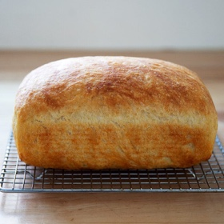

← All recipes
Peasant Bread Loaf

Servings: 1 loaf ·
Ingredients
- 3 cups (384 g) bread flour or all-purpose flour
- 1 1/2 teaspoons (5 g) instant yeast, see notes if using active dry
- 1 1/2 teaspoons (7 g) sugar
- 1 1/2 teaspoons (5 g) kosher salt
- 1 1/2 cups (340 grams) lukewarm water
- Softened butter
- 1 tablespoon olive oil
Directions
- In a large bowl, whisk together the flour, yeast, sugar and salt. Add the lukewarm water. Using a spatula, stir to combine until you have a sticky dough ball. Cover the bowl with a tea towel and place in a warm spot to rise until the dough doubles, about 2 hours (or longer depending on the temperature of your kitchen).
- Heat the oven to 375F. Grease a 9×5-inch or 8.5×4.5-inch loaf pan with the softened butter. Deflate the dough using two forks or a flexible dough scraper. Pour the 1 tablespoon of olive oil over the dough and turn the dough ball to coat it in the oil. Transfer the dough to the prepared pan. Let rise until the dough crowns the rim of the pan, about 45 minutes to an hour.
- Transfer the pan to the oven and bake for 45 minutes. Turn the dough out onto a cooling rack and let cool for 30 minutes before slicing.
- If using active-dry yeast, sprinkle it over the lukewarm water and add the sugar. Let stand for 15-20 minutes or until the yeast gets foamy. Then proceed with the recipe.
Original source: cupofjo.com